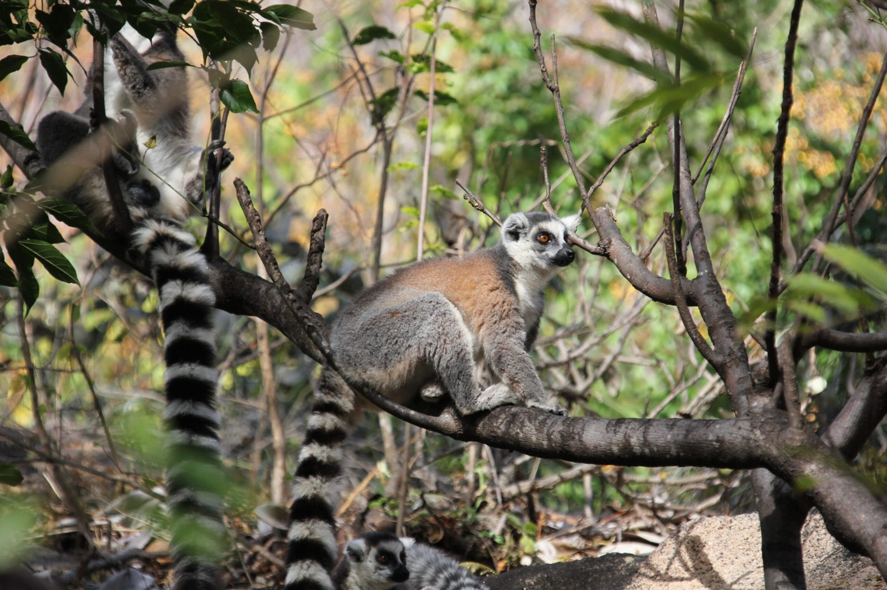
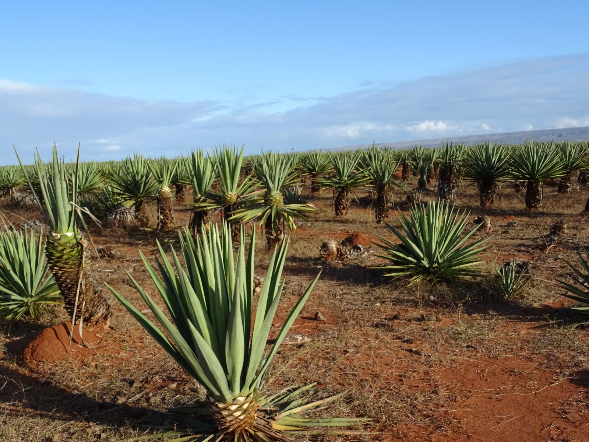
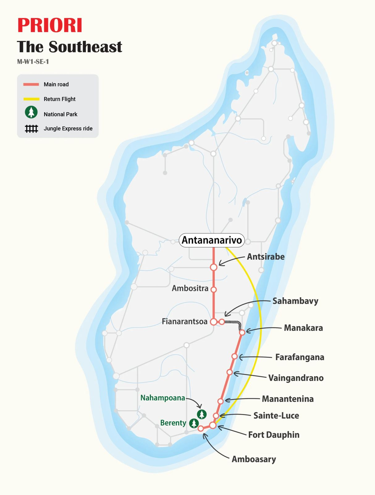

html
MG115 · Off the Beaten Track
South-East Madagascar
Fort-Dauphin to the Jungle Express: spiny forests, wild coastline, Pangalanes pirogue rides, and a train journey through tropical rainforest few tourists ever see.

An intensive and comprehensive journey through the least-visited corner of Madagascar. From the peninsula of Fort-Dauphin, where the Indian Ocean wraps around three sides, we push north along wild coastal scenery, past fishing villages, thorn forests, carnivorous pitcher plants, and river crossings by traditional ferry. The culmination: the legendary Jungle Express, winding up through tropical rainforest toward the highlands in an atmosphere of slow travel and rare encounters. Very few tourists come this way. That is precisely the point.
At a Glance
The Essentials
Itinerary Antananarivo → Fort-Dauphin → Berenty → Nahampoana → Fort-Dauphin → Manantenina → Vangaindrano → Manakara → Sahambavy → Antsirabe → Antananarivo
Nature and culture, far from the tourist trail: a journey through the south-east where every encounter feels genuinely unscripted.

Not to Miss
Circuit Highlights
- Berenty Reserve. A dry spiny forest along a river, rich in endemic species. Ring-tailed lemurs, remarkably curious and approachable, move freely among the trees. Wooden funeral sculptures and obelisks near Antanosy villages add a rare cultural layer to the experience.
- Wild South-East coastline. An isolated world of coastal dunes rich in carnivorous pitcher plants, traveller's trees, windswept grasslands, and river crossings by traditional Malagasy ferry. Small villages, very few visitors, and coastal scenery of remarkable raw beauty.
- Pangalanes Canal, Manakara. A pirogue gliding along the calm waters of the canal, past rice fields, fishing villages, and friendly faces on the bank. Two unhurried days in one of Madagascar's quietest towns.
- The Jungle Express. An early morning departure on the 1936 railway from Manakara into the highlands: bridges, tunnels, dense rainforest closing in on both sides, and all the time in the world for photos and conversation with fellow passengers.

Day by Day
Full Itinerary
- Day 1 Flight from Switzerland Madagascar welcomes us. We land late in the evening in Antananarivo and a driver takes us directly to our hotel.
- Day 2 Antananarivo → Fort-Dauphin A flight to the coastal town of Fort-Dauphin, in the far south-east of the island. It sits on a narrow peninsula enclosed by the Indian Ocean on three sides, wide bays, beautiful sandy shores, and an invitation to slow down.
- Day 3 Fort-Dauphin → Berenty Reserve About 90 km west of Fort-Dauphin, the Berenty Reserve is a dry spiny forest running along a river, dense with animal and plant species, many endemic to Madagascar. Every step brings new surprises.
- Day 4 Berenty → Fort-Dauphin Another morning exploring the 250-hectare reserve. On the return journey the landscape softens: this is the kingdom of lychees, pineapples, and melons. Near Antanosy villages, we observe the striking wooden funeral sculptures and obelisks erected in memory of the deceased.
- Day 5 Fort-Dauphin → Nahampoana Reserve The private Nahampoana Reserve, just 7 km from Fort-Dauphin, is home to chameleons, tortoises, and many diurnal lemurs, including the charming ring-tailed lemur with its bold black-and-white tail, curious and happy to be approached. The vegetation is equally striking: cactus, aloe, euphorbia, prickly pear, carnivorous plants, and enormous elephant-ear leaves.
- Day 6 Nahampoana → Fort-Dauphin A final hike in Nahampoana before returning to Fort-Dauphin. The town is dominated by the silhouette of Mount Saint-Louis (529 m). We walk along sandy beaches, explore local restaurants, and take in the colonial-era architecture.
- Day 7 Fort-Dauphin → Ste. Luce → Manantenina We cross mountains and follow dirt tracks to the fishing village of Ste. Luce, where fishermen work a beautiful sheltered bay. In the afternoon, we continue north to Manantenina, crossing a river on a traditional Malagasy ferry.
- Day 8 Manantenina → Vangaindrano Through a very isolated region, small villages, wild coastal scenery, and varied vegetation. We cross dunes rich in carnivorous pitcher plants, admire traveller's trees, open savannah, and windswept grasses. Another river crossing by ferry before reaching Vangaindrano.
- Day 9 Vangaindrano → Farafangana → Manakara Quiet, beautiful coastal landscapes accompany us northward through Farafangana to Manakara. The railway built here in 1936 once made Manakara an important trade hub; today it is calm again, and all the more inviting for it.
- Day 10 Manakara: Pangalanes Canal A restful day in Manakara. We take a pirogue out onto the Pangalanes Canal, discovering rice fields, fishing villages, and friendly locals along the banks. The pace is exactly right.
- Day 11 Manakara: Free Day Another unhurried day in Manakara, time to explore the tropical countryside at leisure, walk the town's quiet streets, or simply sit and watch the world go by.
- Day 12 The Jungle Express: Manakara → Sahambavy Early departure on the legendary Jungle Express toward the highlands. The train winds through lush rainforest, crossing bridges and threading through tunnels, the trees pressing in from both sides. A slow, generous journey: time for photographs, conversation with fellow passengers, and the pleasure of watching the landscape gradually rise. Our driver meets us on arrival in Sahambavy.
- Day 13 Sahambavy → Antsirabe Past green tea plantations and into the changing highland landscape, red soil, rice paddies, and traditional houses lining the road. In Ambositra, we pause to admire the exquisite local woodcarving tradition. Evening arrival in Antsirabe, the spa town founded by Norwegian missionaries.
- Day 14 Antsirabe → Antananarivo Our final travel day. Carrying many impressions and stories, we make our way back to the capital Antananarivo, the island's highland heart, for one last evening in Madagascar.
- Day 15 Return Flight The journey ends. Veloma Madagasikara : farewell, Madagascar.

PRIORI M-W1-SE-1